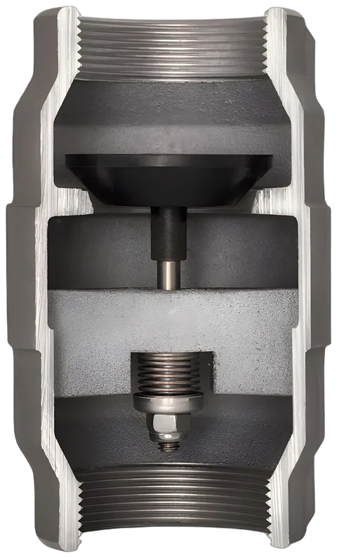
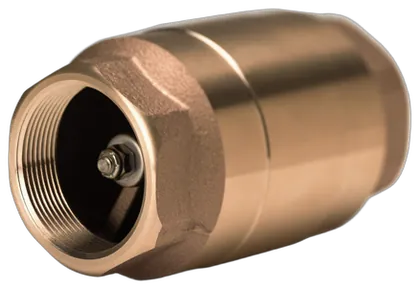
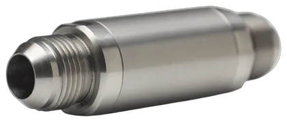
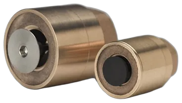
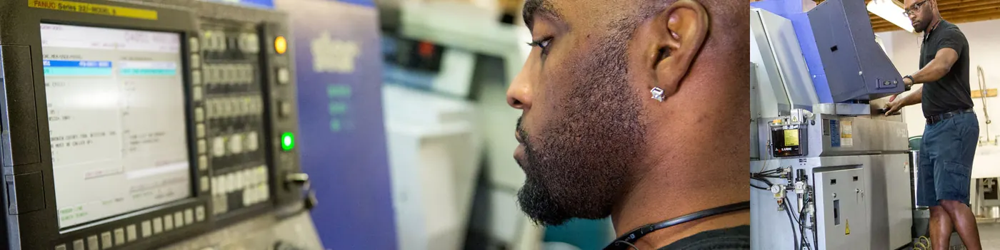
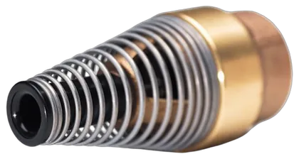

Check and foot valves from Fort Wayne, Indiana
No O-rings. A molded poppet since 1939.
American-made check and foot valves, machined to exacting tolerances, then assembled and tested by a skilled team before they carry the Strataflo name.
- Tested twicefor casting integrity and backflow prevention
- ISO 9001:2015registered quality management system
- 1/4" to 4"pipe sizes across the standard line

PoppetRubber molded around a steel insert
SeatOpens wide, even at low flow
The BladeGuides the poppet at every flow rate
Flow
Three ways to get a Strataflo valve
Pick one off the shelf, build one from modular parts, or have the engineering team design one around your equipment.

Standard
56 check and foot valves in bronze, lead-free bronze, nickel-plated bronze, stainless, aluminum and plastic.
Find your valve
Modular
The patented modular system: choose the body, the poppet and the end connection on each side.
Build your valve
Custom
"We are geeks (and engineering pros) at solving challenges requiring a custom solution."
Start a custom projectHow much one valve passes
The published flow of the No. 300 bronze check valve, size by size. Every product page on strataflo.com carries a table like this.
| Pipe size | Flow bar | Flow |
|---|---|---|
| 3/8" | 2 GPM | |
| 1/2" | 4 GPM | |
| 3/4" | 6 GPM | |
| 1" | 13 GPM | |
| 1-1/4" | 24 GPM | |
| 1-1/2" | 38 GPM | |
| 2" | 61 GPM | |
| 2-1/2" | 69 GPM | |
| 3" | 185 GPM | |
| 4" | 205 GPM |
Cv is flow in gallons per minute at a 1 psi differential. NPT threaded. The 3" shown is the newer valve with standard female threads on both ends.
No. 300, at a glance
- BodyCast bronze C84400
- PoppetBuna-S rubber
- Working pressure400 psi
- Max. temperature225°F
- Cracking pressure1–2 lbs.
- Optional cracking1/2, 5 or 10 lbs.
Need more pressure? The No. 3400RB in 303 stainless is rated 3000 psi working and 350°F.
Start from what runs through it
Body and seal decide what a valve can carry. Choose the fluid and see every standard valve rated for it.
Made by skilled hands

“Every valve that bears the name Strataflo starts with our proprietary American-made castings, machined to exacting tolerances and built with craftsmanship by skilled hands.”
Strataflo Products
- Each valve is tested for casting integrity and backflow prevention. Only then is it branded with the Strataflo name.
- An exclusive one-piece poppet seals instead of O-rings, in every standard check and foot valve.
- ISO 9001:2015 quality management system, for the same standard every time.

A foot valve built to be dropped down a borehole
For Design Outreach's LifePump deep well handpump, Strataflo adapted its foot valve with an extra-rigid cast end, so it survives being dropped into the deep boreholes of Africa. The team also engineered a self-closing valve for rural water standposts, using the same rubber poppet.
Those products are used throughout Haiti and Africa.
More custom workTalk to someone who knows valves
260-482-4366 sales@strataflo.comStandard valves can also be ordered online, with a cart and an account, at strataflo.com.
- Hours
- 8 A.M. to 4:30 P.M. Eastern, Monday to Thursday. Closed Friday.
- Address
- Strataflo Products, Inc.
1310 Progress Rd., Fort Wayne, IN 46808 - Fax
- 260-482-3340